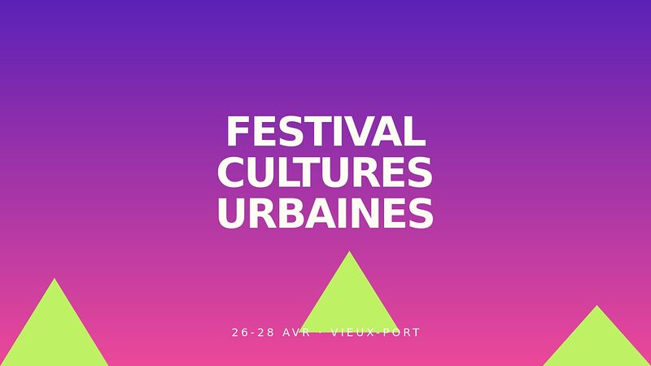

Du 26 au 28 avril · Vieux-Port
Festival des cultures urbaines
- 🎵 80 artistes
- ♻️ Éco-responsable
- 👥 Tout public

Trois jours pour célébrer les cultures urbaines : musique, danse, arts visuels et débats au Vieux-Port. Plus de 80 artistes locaux et internationaux.